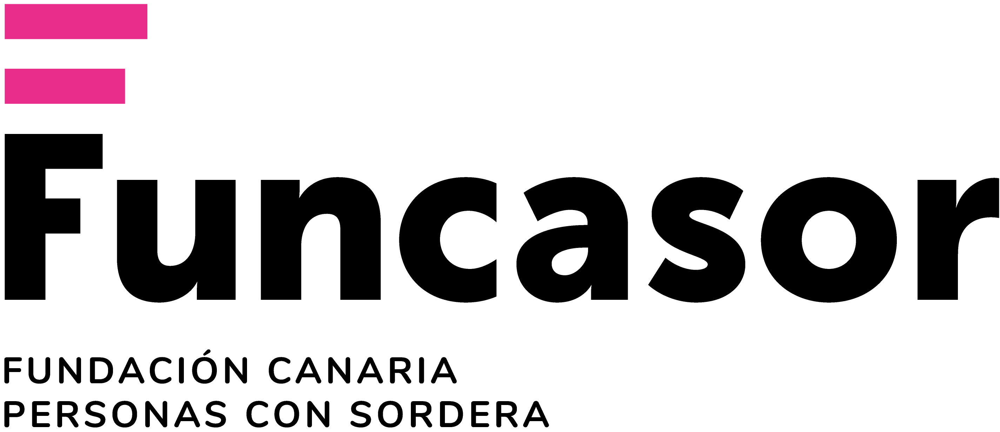
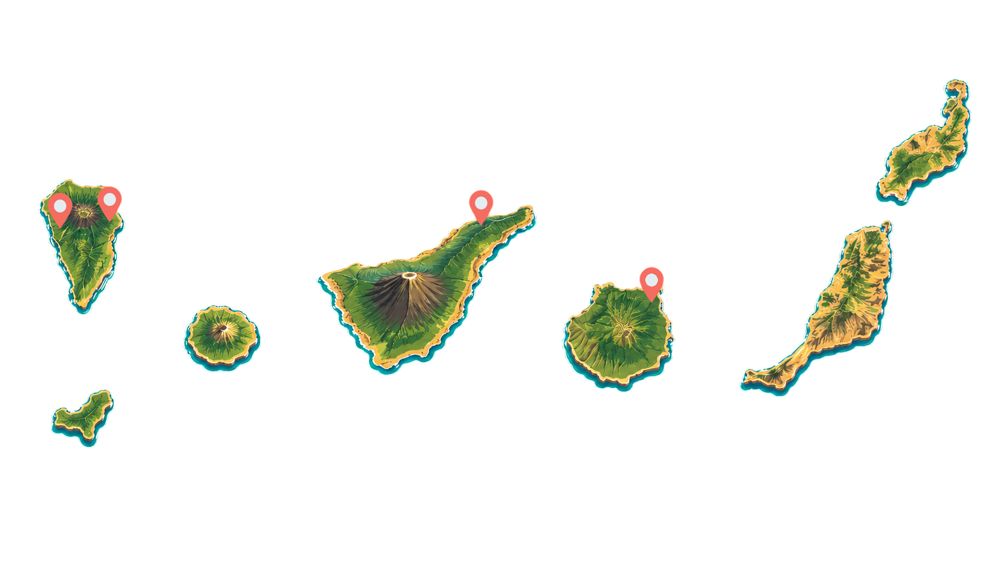

Rehabilitación auditiva
Intervención para aprovechar audífonos, implante coclear u otras ayudas auditivas mediante escucha guiada y objetivos funcionales.

Servicio de Logopedia
Una propuesta digital para presentar el trabajo de rehabilitación auditiva de Funcasor en Canarias, con información clara, mapa de presencia activa y actividades breves para entrenar habilidades auditivas.
Papel del servicio
Intervención para aprovechar audífonos, implante coclear u otras ayudas auditivas mediante escucha guiada y objetivos funcionales.
Trabajo sobre vocabulario, comprensión, expresión oral y estrategias comunicativas adaptadas a cada persona y entorno.
Orientación a familias, centros y profesionales para que los avances de sesión se traduzcan en participación real.
Servicio activo

La Palma
El servicio adapta los objetivos de escucha, lenguaje y comunicación a las necesidades de la persona y su entorno familiar, educativo o laboral.
Habilidades auditivas de Erber
La persona aprende a advertir si hay sonido o silencio. Es la base para responder a la voz, sonidos ambientales y señales de alerta.
Microdemostraciones de rehabilitación auditiva
Detección
Pulsa reproducir y decide si hay sonido o silencio.